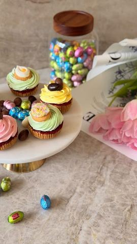

Moja beleška
Sačuvano
Ocena
Sastojci
- Podloga
- Malina sloj
- Beli čokoladni ganaš krem
- Priprema
Priprema
2️⃣ Maline i šećer kratko prokuvajte. Dodajte želatin prethodno razmućen u hladnoj vodi, promešajte i prelijte preko podloge. Ostavite da se prohladi. 3️⃣ Slatku pavlaku zagrejte do ključanja i prelijte preko bele čokolade. Dobro izmešajte dok se ne dobije glatka smesa, pa ostavite u frižideru par sati da se ohladi. (možete ovo pripremiti i veče pre i čuvati u frižideru) 5️⃣ Dekorišite po želji i uživajte 💛
Originalni opis sa Instagrama
Uskrs + deca + slatkiši = moja omiljena kombinacija 🐥💛 Uvek ga provodimo uz puno dece, smeha, prijatelja i porodične trpeze prepune slatkih zalogaja. Inspiraciju za ovu veselu poslasticu pronašla sam u @lidlsrbija , jer su stigli naši omiljeni proizvodi i slatkiši koje obožavaju mali i veliki. Lagan, kremast, voćni desert koji izgleda baš kao mali šareni uskršnji san 💕 🧁 Sastojci: Podloga: 150 g mlevenog keksa 80 g putera 70 ml soka od pomorandže Malina sloj: 200 g malina 3 kašike šećera 1 kesica želatina + 20 ml hladne vode Beli čokoladni ganaš krem: 100 g bele čokolade 80 ml slatke pavlake 🥄 Priprema: 1️⃣ Pomešajte mleveni keks, otopljen puter i sok od pomorandže, pa utisnite u kalup kao podlogu. 2️⃣ Maline i šećer kratko prokuvajte. Dodajte želatin prethodno razmućen u hladnoj vodi, promešajte i prelijte preko podloge. Ostavite da se prohladi. 3️⃣ Slatku pavlaku zagrejte do ključanja i prelijte preko bele čokolade. Dobro izmešajte dok se ne dobije glatka smesa, pa ostavite u frižideru par sati da se ohladi. (možete ovo pripremiti i veče pre i čuvati u frižideru) 4️⃣ Umutite ohlađeni ganaš u krem, podelite ga u 3 dela i obojite u uskršnje boje. 5️⃣ Dekorišite po želji i uživajte 💛 Sačuvajte ideju za pripremu 🌸 #LidlMoreToValue #EasterIsWorthIt #LidlFavorina #LidlSrbija #Favorina